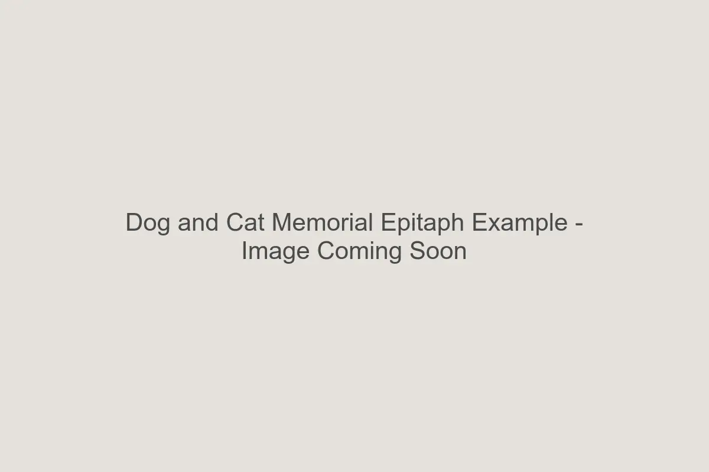

Introduction
An engraved stone is a permanent marker of love. Unlike a card or a social media post, the words you choose for a memorial stone will be carved into rock and placed outdoors for decades. Simplicity is often the most powerful choice.
When creating your custom pet memorial stone, consider the space available. A few well-chosen words engraved deeply and clearly will always look better than a crowded paragraph.
Short & Minimal Phrases
These classics fit well on any size stone, including our smaller 7" x 4" markers.
- Forever Loved
- Always in Our Hearts
- Our Best Friend
- Beloved Companion
- Faithful Friend
- Rest in Peace
- Forever Missed
Dog Memorial Wording
Phrases that capture the loyalty and joy of a canine companion.
- A Good Dog
- Loyal and True
- Run Free
- Waiting at the Rainbow Bridge
- Barking with the Angels
- You Left Paw Prints on Our Hearts
- A Lifetime of Love
Cat Memorial Wording
Tributes for the quiet, comforting presence of a beloved cat.
- Purring in our Hearts
- Nine Lives of Love
- A Gentle Soul
- Sleep Softly
- Our Sweet Kitty
- Forever Napping in the Sun

Religious & Faith-Based
- All Creatures Great and Small
- God's Little Angel
- Until We Meet Again
- Blessed are the Pure in Heart
- In God's Care
Engraving Considerations
Before finalizing your text, remember to check our guide on choosing the right size pet memorial stone. A long quote like "If love alone could have saved you, you would have lived forever" requires a larger surface area (typically 12" x 8" or larger) to ensure the letters are large enough to be legible.
Deep sandblast engraving works best with bold, clear fonts. Avoid overly thin scripts or complex punctuation that might chip over time in an outdoor setting.
FAQ
Can I use a nickname?
Absolutely. "Buddy," "Princess," or "Mr. Whiskers" often feels more personal than a formal
name.
Should I include dates?
Dates anchor the memorial in history. You can use full dates (mm/dd/yyyy) or just years
(2010 - 2024) to save space.
Can I write my own poem?
Yes, but please keep length in mind. Custom poetry often requires a custom size quote.